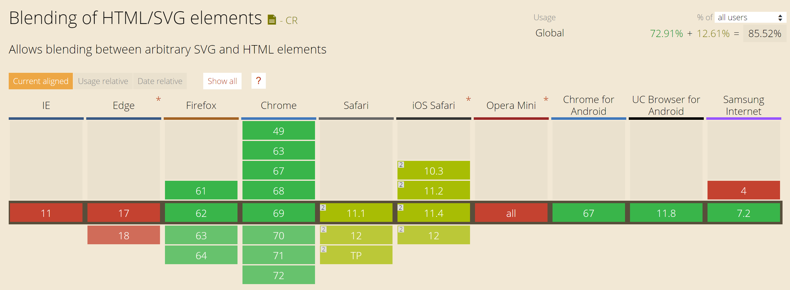

Scalable Vector Graphics
Sam Ellis @
Slides at elliz.github.io/ccsvg
The Basics
Images on the Web
- GIF
- JPEG
- PNG
- SVG - since 1998
- ... and new ones like webp
SVG is XML
Scalable Vector Graphics (SVG) is an XML-based markup language for describing two dimensional based vector graphics.
SVG is essentially to graphics what HTML is to text.
SVG Structure
Old JPG
- Original ~100kb
- Optimized ~50kb
- Can SVG do better?
Gotcha
WAT !?
Learn
- MDN Web Docs - SVG Tutorial
- Sara Soueidan - Guru
- Chris Coyier - CSS Tricks
- Many more ...
Old JPG
~50kb
New SVG Background
- ~2.7kb
- ~.9kb gzip
Gotcha
Browser support
mix-blend-mode: multiply
mix-blend-mode
Chrome et al
IE
Gotcha
Retina vs Standard Resolution
What to SVG Next?
Washing Machine of Death
DEMO
Line animation trick css-tricks
Gotcha
Animating in IE via CSS ...
... have to use JS
So ... Lets animate SVG in IE without JS
Think outside the box ...
This pen
See the Pen Cross browser SVG Please wait button ideas by Ruskinz (@elliz) on CodePen.
This pen
See the Pen SVG Loading graphic by Ruskinz (@elliz) on CodePen.
Square Circles
Solutions:
- edges hidden (padding or overflow:visible)
- Browser rendering (move 1/2 pixel in)
Get a handle on it
Gotcha
Editor Cruft
Demo - Inkscape
This pen
See the Pen Animated blob SVG text clipping effect - Pt. 2 by Zach Saucier (@ZachSaucier) on CodePen.